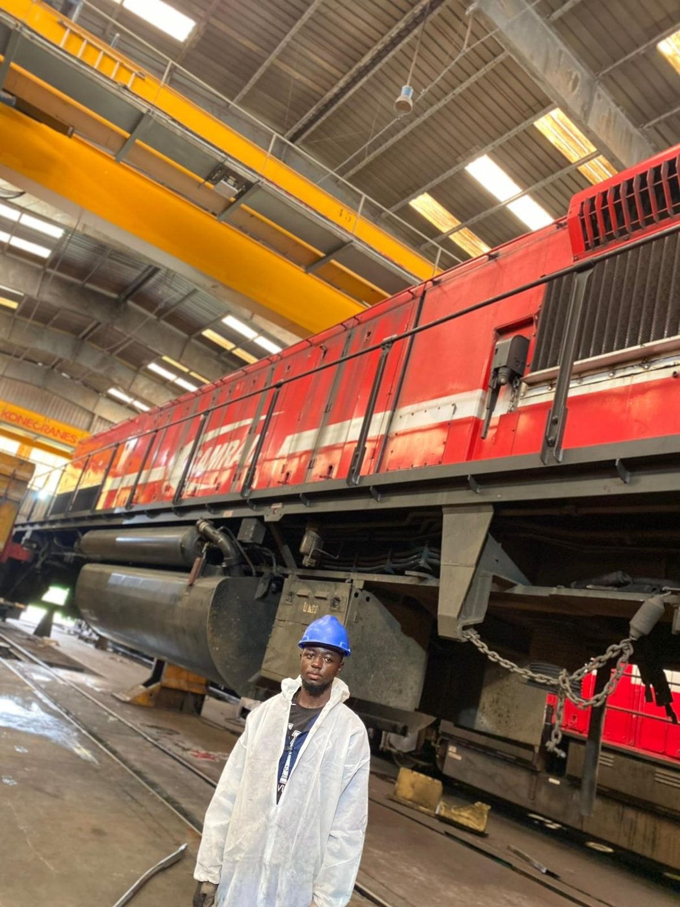
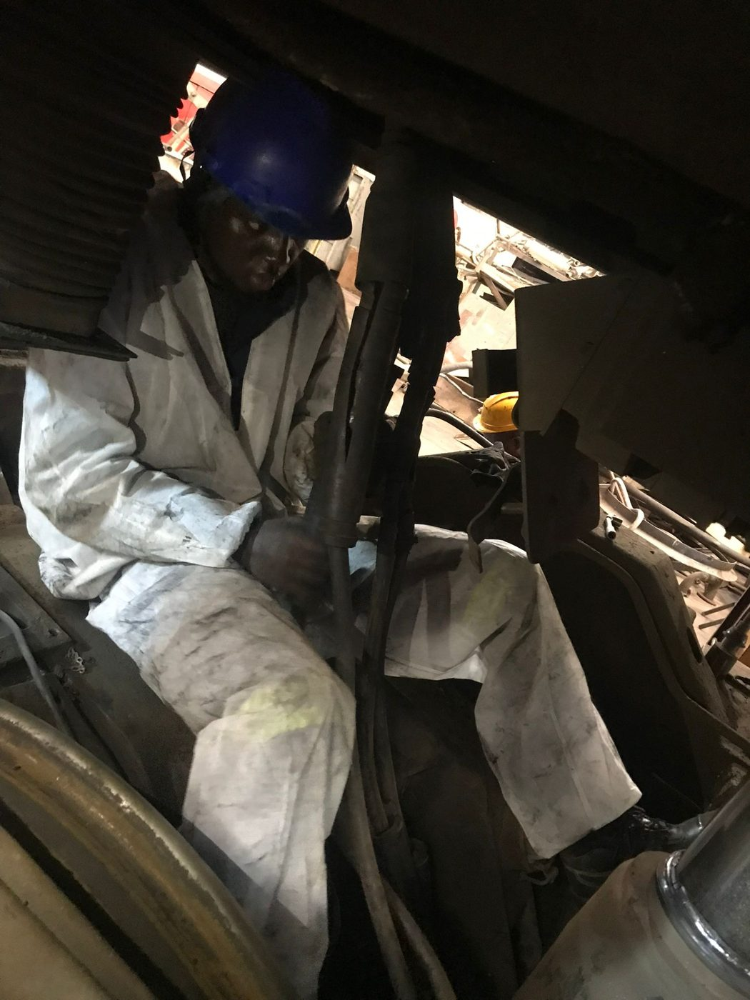

Expériences professionnelles
Un stage en maintenance de locomotives et deux missions en production.
-
29 juin au 6 septembre 2026
Opérateur de production
Elis, Calais.
- Participation aux opérations de production et de traitement du linge.
- Tri, contrôle et préparation des articles selon les procédures.
- Respect des consignes de qualité, d'hygiène et de sécurité.
-
Hiver 2025
Opérateur de production (intérim)
Crusta C, Boulogne-sur-Mer.
- Participation aux opérations de production et de conditionnement.
- Contrôle de la qualité des produits et respect des normes d'hygiène et de sécurité.
-
Juillet à septembre 2024
Stagiaire électrotechnicien
CAMRAIL (chemin de fer), Cameroun.
- Câblage des plaques à bornes des alternateurs de locomotives.
- Câblage des moteurs de traction de locomotives de type CC-2299.
- Câblage général et installation des câbles de traction d'une locomotive de type BB-3311-AC.
- Opérations de maintenance sur les locomotives.

